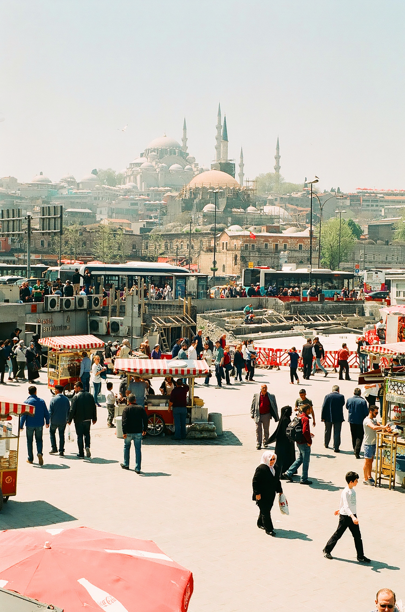

City Of Diverse

#1 Vancouver
For people who want to enjoy both nature and city
Vancouver is one of the most beautiful city in Canada.
Vancouver has many immigrants from different countries so the city is very diversity
and so you can experience various kind of foods from all around the world.
Another great point of visiting Vancouver is
that you can enjoy both nature and city.
Summer is the best season to experience the real Vancouver life!
Things you can do
You should go hiking and cycling when you visit
Vancouver. There are many great places for those activities
in daytime. Stanley park is called the 2nd most beautiful
park in the world and a lot of people enjoy outdoor activities.
In the night, you can head to downtown and enjoy dinner in
sophisticated restaurants.
It is also very accessible to visit
to another beautiful spot called Victoria. You can choose either
short flight or boat to get there.
Totem Pole
Winter Robson squre
Steam clock in Gastown

Authentic Chinese food
Food/Tourist attractions
Things you can eat
Seafood is a great choice to eat in Vancouver. Vancouver is also known as the sushi capital of North America so you can eat fresh and authentic sushi there. Vancouver also has a lot of good Asian foods such as Chinese and Korean foods. If you go to a place called Robson square, you can find your favourite restaurant.
Places you should visit
Capilano suspension bridge is one of the most popular places to visit in Vancouver. The bridge is 140 meters long and 70 mitres above the river. Another places to visit is Lynn canyon park. It is a municipal park in the District of North Vancouver. The blue pools are perfect to ride out a summer heat wave.

Sushi

Lynn canyon park
Capilano Bridge
Histrical and Joyful City
#2 Istanbul
For people who look for a photogenic place for instagram.
City that has a lot of love
Istanbul is the biggest city in Turkey and the place is located between Europe and Asia. Many tourists overwhelm how beautiful the entire view of city is. You can see such a beautiful view in every singe places.
Things we can do
Since Turkey has such a long history so you can visit many historical places. You can also visit both biggest district of Europe side and its Asian side since both sides has different atmosphere.
Trying local foods and Turkish ice cream there will make your travel more fun. It is best timing to go shopping in Istanbul for tourists since The value of Turkish lira has declined recently.
Restaurant in Istanbul
Turkish Lump
Turkish Delight
Istanbul city
Food/Tourist attractions
Things you can eat
If people think about the famous food in Turkey, most people tend to think of Kebab. However, the most delicious food in Turkey is Turkish breakfast. It is very simple breakfast but it has very nutritious and tasty. People in Turkey alway have breakfast with either Turkish coffee or tea. The breakfast is very good with them.
Places you should visit
Ayasofya is one of the best historical place in Istanbul. It is a museum that have transformed the shape of role throughout a thousand of years. Karaokoy and Kadikoy are the biggest district in istanbul. Both city have different tastes.

Turkish Breakfast
Turkish Coffee

Aya Sophia